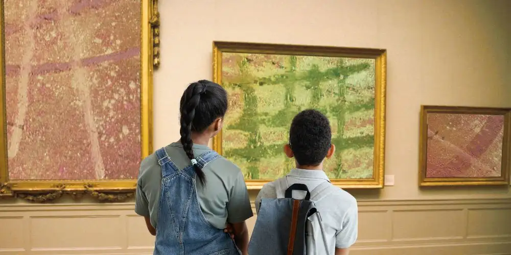

リナ・クルーガー
子供向けオーディオガイドの作り方
子供向けの音声ガイドは、大人向けの音声ガイドとは全く異なる設計が必要です。いくつかヒントを挙げましょう。
子供たちは、大人とは異なる世界を体験しています。彼らの興味、予備知識、興奮や重要性の理解は大きく異なります。さらに、年齢に応じて、子供は大人とは異なる方法で学習します。そのため、単に大人向けのコンテンツを再利用するのではなく、子供向けに特化した情報を提供することが重要です。
子供向けの音声ガイド（簡潔な時間枠で幅広い情報を伝えるように設計された製品）を開発する場合、子供の特別なニーズを考慮することが最も重要です。内容や伝え方を子供の視点に合わせれば合わせるほど、子供の体験はより豊かで思い出深いものになります。
子供たちに音声ガイドを提供したいという願い
よくあるシナリオ：ある美術館が、大人向けの音声ガイドをすでに持っていて、子供向けの商品で展示を拡大したいと考えている。既存の音声ガイドには、ある程度の数のロケーションがあり、通常はテーマごとに1つずつ、数分の間に高密度の情報が散りばめられている。
さて、子供向けの音声ガイドを作りたい場合、単純に大人向けを同じロケーションの数を取り、情報を減らし、ストーリーテラーのような声のナレーターに読ませるのは得策ではありません。音声ガイドを一から、子供向けに考え直さなければなりません。
すべてはコンテンツの選択から始まる
テーマの選択も重要です。子供は大人とは違うものに興味を持つことが多いので、同じ展覧会でも他の展示物の方が興味を引くかもしれません。音声ガイドを聞くロケーションを選んだら、ひとつひとつを注意深く見て、子供の視点から見て考えてみましょう。
子供用と大人用に同じロケーションを選んだとしても、同じテーマでも子供と大人では興味を持つ情報は異なるかもしれません。たとえば、大人は当時の政治的背景や日付、重要な人物に興味を持つかもしれないし、子供は珍しい数字や大きさ、個人の裏話に夢中になるかもしれない。また、子供たちは大人とはまったく異なる背景知識を持っています。自分たちの生活のどのような面に詳しいかを考え、それを結びつけてみましょう。
さらに気をつけなければならないのは、一口に「子供」と言っても、例えば、未就学児と13歳では知識のレベルが全く違いますし、興味の対象や認知力も大きく異なります。したがって、オーディオガイドがどの年齢層を対象としているかを明確にすることが重要です。できるだけ多くの子供たちが利用できるように、対象年齢を8歳から12歳の間に設定するのがよいでしょう。対象年齢が決まったら、その年齢の子供を知っているかどうかを検討し、オーディオガイドの制作に関わるすべてのステップの目安としてください。
すべてを支えるフレームワーク
ロケーションとテーマの大まかなイメージが決まったら、オーディオガイドの枠組みを考える必要があります。まず、各ロケーションを単独で見て回るのか、あるいは特定の順番で見るのかを決めます。次に、オーディオガイドで子供たちが誰の話を聞くかを決めます。例えば、展覧会のテーマと関連性のある登場人物を1人以上考えておくとよいでしょう。これらの登場人物は、音声ガイドの冒頭で子供たちに紹介され、その後、館内を案内することになります。
導入部分は、実際の展示場で今現在行われるという設定でもよいですし、たとえば、子供たちをイベントの場所と時間にいざなう物語の形で行われることも良いでしょう。オーディオ・ツアーは子供たちをロケーションから次のロケーションへと案内し、ツアーの最後にしか解けない謎解きのような形で提供することもできます。可能性は無限です。最も重要なことは、音声ガイドが最初から子供たちの好奇心と興味を引きつけ、展覧会に行きたいと思わせることです。
情報密度に関して言えば、少ない方が得られるものが多い
大人のオーディオガイドと同様、完成するオーディオ・ツアーの各トラックの長さは2分以内とします。各オーディオ・トラックのテキストを短くし、かつ重要な情報をすべて盛り込むことはなかなか大変です。
情報は必要最低限にとどめ、わかりやすく、何より子供たちが興味を持てるように紹介しましょう。情報の隙間を楽しいもので埋めたり、オーディオガイドの登場人物に時折いたずらをさせたり、遊び心のある方法で情報をストーリーに組み込んだりしましょう。大人向けのオーディオガイドでよくあるように、単にリスニングポイントをいくつも設けて情報を提供するだけでは、子供たちはすぐに圧倒されたり、飽きてしまったりして、情報をきちんと受け止められなかったり、しまいには聴くのをあきらめてしまったりする可能性があります。
テキストは聴くために作られている
オーディオガイドの大まかな計画ができたら、録音するテキストのスクリプトを書き始めます。テキストを書くときには、オーディオガイドでは読むのではなく、聴くのだということを忘れないでください。聴くための文章は、読むための文章とは大きく異なります。なぜなら、聴くことはその一瞬のことであり、それゆえ書き言葉よりもはるかに正確である必要があります。聞き手が子供である場合、なおさら重要です。
簡単で説明をする、単純な構文にしましょう。名詞の代わりに動詞を多用した能動的な言葉を使い、繰り返しを多用します。各ポイントについて、自分自身に問いかけてみよう。自分自身で声に出して話し、その内容を書き留めることはとても役に立ちます。専門用語や大きな数字の使用を避けられない場合は、それらを説明しましょう。
最後に、最も重要なのが録音です。音声ガイドに命を吹き込むのは、声、音、音楽です。子供たちが最終的に聞くことになるものですから、オーディオデザインには愛情を注ぎましょう。
登場人物の特徴的な声を考え、それを演じる優れた声優を見つけます。また、発言内容をその場の状況に溶け込ませることができるプロのサウンドデザイナーと一緒に仕事をしましょう。蹄の音、鳥のさえずり、地下室の反響音など、サウンドデザインは最小限のものでよいのですが、子供たちが物語に没頭するためにはとても重要です。また、音声をより面白くする効果もあります。音楽はまた、リスナーをタイムスリップさせたり、登場するアーティストの作品をより具体的なものにすることもできます。
常に守るべき基本原則
最終的に、子供向け音声ガイドのデザインは、制作者の創造性に依存します。しかし、いくつかの基本原則は常に尊重されるべきです：子供たちに真剣に向き合うこと！子供たちに説教するのではなく、何をどのように話すかを伝える。子どもたちを信頼すること。難しい話題は隠さず、慎重に提示する。常に子供の視点から始める。子供たちはどんな質問をするだろうか、すでに知っていることは何だろうか、特に楽しいと思うことは何だろうか、わくわくすることは何だろうか、といったことを考えながら作りましょう。
音声ガイドが子供にとってより親しみやすく、より深く関われると感じられるものであればあるほど、子供はその音声ガイドに耳を傾け、理解し、記憶するようになります。
こちらもお勧めです美術館の音声ガイドの台本の書き方